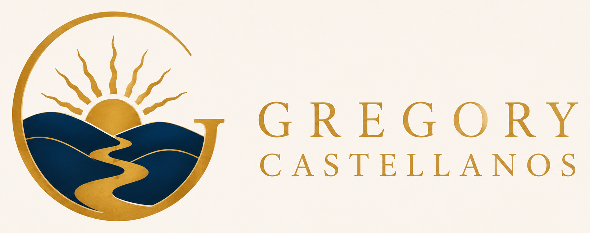
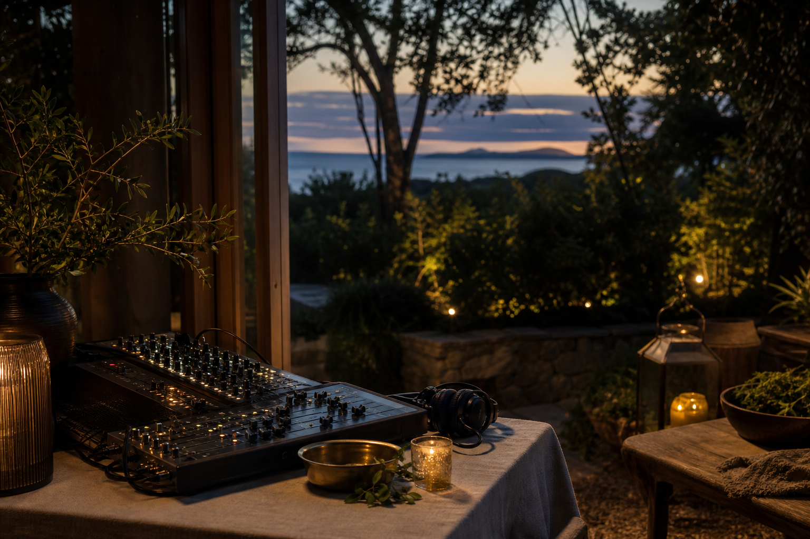

More Than Logistics
A good experience is not just a schedule, a speaker, a playlist, or a piece of equipment. It is the relationship between sound, light, hospitality, setting, pacing, trust, and what people are invited to do together.

Gregory CastellanosPeople, ideas, brands, technology, experiences, placesExperiences
Gregory's experience work grew from sound systems and live production into a broader practice of designing how people gather, learn, listen, celebrate, and feel held in a place.
Talk about experiences
A good experience is not just a schedule, a speaker, a playlist, or a piece of equipment. It is the relationship between sound, light, hospitality, setting, pacing, trust, and what people are invited to do together.
This work includes Recreation Experiences, Recreation Sound Systems, Selectas Flow, event production, retreats, healthy nightlife, private gatherings, workshops, DJing, curation, technical direction, lighting, video, and immersive environments.
Stay In The Light, TUESDATE, founder-retreat concepts, private gatherings, community events, and place-based workshop formats are treated as experience systems. Private venue details stay private.
Related Work
A few related anchors from the broader practice.
People / Ideas / Brands / Technology / Experiences / Places
A nonprofit community arts center and maker hub in North Beach, San Francisco.
Brands / Technology / Experiences
Patented sustainable audio technology and a production practice rooted in sound, design, and live operations.
Ideas / Brands / Experiences / Places
A broader experience platform for events, retreats, fundraisers, workshops, and community gatherings.
Ideas / Brands / Experiences / Places
A retreat and gathering concept shaped around presence, hospitality, and place-based experience.
Ideas / Experiences / Places
Hospitality and property-readiness work connected to guest experience, organization, and practical improvement.
People / Experiences / Technology
A radio and music platform connected to listening, curation, rhythm, community, and the culture of gathering.